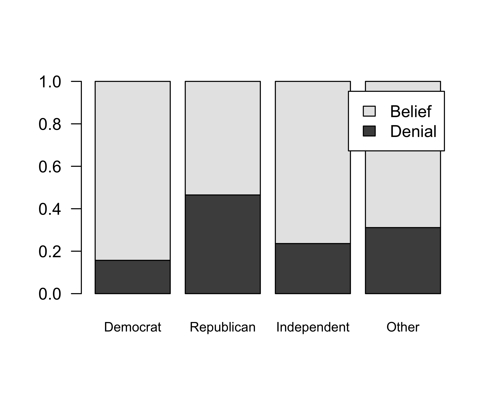
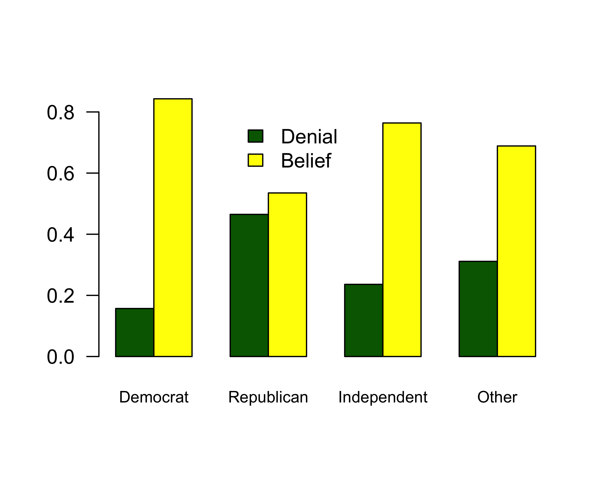

The Two-Way Table
The two-way table (also known as a cross-tabulation or crosstab) gives the joint distribution of two categorical variables. Lets use our politics dataset to construct a two-way table of belief in anthropogenic climate change by political party:
tab <- table(politics$party, politics$globalwarm)
tab##
## No Yes
## Democrat 230 1235
## Republican 577 664
## Independent 326 1055
## Other 47 104The two-way table gives us the joint distribution of the two variables, which is the number of respondents who fell into both categories. For example, we can see that 234 democrats did not believe in anthropogenic climate change while 1230 did.
From this table, we can also calculate the marginal distribution of each of the variables, which are just the distributions of each of the variables separately. We can do that by adding up across the rows and down the columns:
| Deniers | Believers | |
|---|---|---|
| Democrat | 230 | 1235 |
| Republican | 577 | 664 |
| Independent | 326 | 1055 |
| Other | 47 | 104 |
| Total | 230+577+326+47=1180 | 1235+664+1055+104=3058 |
| Total | |
|---|---|
| Democrat | 230+1235=1465 |
| Republican | 577+664=1241 |
| Independent | 326+1055=1381 |
| Other | 47+104=151 |
| Total | 4238 |
The marginal distribution of party affiliation is given by the Total column on the right and the marginal distribution of climate change belief is given by the Total row at the bottom. Looking at the column marginal, we can see that there were a total of 1464 Democrats, 1239 Republicans, and so on. Looking at the row marginal, we can see that there were 1181 anthropogenic climate change deniers and 3057 anthropogenic climate change believers. The final number (4238) in the far right corner is the total number of respondents altogether. You can get this number by summing up the column marginals (1181+3057) or row marginals (1464+1239+1383+152).
The margin.table command in R will also calculate marginals for us. I can use the margin.table command on the table I created and saved above as tab to calculate the same marginals as above. Note that you need to indicate which marginal you want by a number, where 1=row and 2=column, as the second option to margin.table:
margin.table(tab,1)##
## Democrat Republican Independent Other
## 1465 1241 1381 151margin.table(tab,2)##
## No Yes
## 1180 3058The two-way table provides us with evidence about the association between two categorical variables. To understand what the association looks like, we will learn how to calculate conditional distributions.
Conditional distributions
To this point, we have learned about the joint and marginal distributions in a two-way table. In order to look at the relationship between two categorical variables, we need to understand a third kind of distribution: the conditional distribution. The conditional distribution is the distribution of one variable conditional on being in a certain category of the other variable. In a two-way table, there are always two ways to calculate a conditional distribution. In our case, we could look at the distribution of climate change belief conditional on party affiliation, or we could look at the distribution of party affiliation conditional on climate change belief. Both of these distributions really give us the same information about the association, but sometimes one way is more intuitive to understand. In this case, I am going to start with the former case and calculate the distribution of climate change belief conditional on party affiliation.
This conditional distribution is basically given by the rows of our two-way table, which give the number of individuals of a given party who fall into each belief category. For example, the distribution of denial/belief among Democrats is 429 and 1932, while among Republicans, this distribution is 708 and 681. However, these two rows are not directly comparable as they are because Republicans are a much smaller group than Democrats. Thus, even if the shares were very different between the two groups, the absolute numbers for Republicans would probably be smaller for both categories. In order to make these rows comparable, we need the proportion of each party that falls into each belief category. In order to do that, we need to divide our rows through by the marginal distribution of party affiliation, like so:
| Deniers | Believers | Total | |
|---|---|---|---|
| Democrat | 230/1465 | 1235/1465 | 1465 |
| Republican | 577/1241 | 664/1241 | 1241 |
| Independent | 326/1381 | 1055/1381 | 1381 |
| Other | 47/151 | 104/151 | 151 |
Note that each row gets divided by its row marginal. If we do the math here, we will come out with the following proportions:
| Deniers | Believers | Total | |
|---|---|---|---|
| Democrat | 0.157 | 0.843 | 1 |
| Republican | 0.4649 | 0.5351 | 1 |
| Independent | 0.2361 | 0.7639 | 1 |
| Other | 0.3113 | 0.6887 | 1 |
Note that the proportions should add up to 1 within each row because we are basically calculating the share of each row that belongs to each column category. To understand these conditional distributions, you need to look at the numbers within each row. For example, the first row tells us that 16% of Democrats are deniers and 84% of Democrats are believers. The second row tells us that 46% of Republicans are deniers and 54% of Republicans are believers.
We can tell if there is an association between the row and column variable if these conditional distributions are different across rows. In this case, they are clearly very different. About 84% of Democrats are believers while only about half (54%) of Republicans are believers. About 76% of Independents are believers, while about 68% of members of other parties are believers.
We can use the prop.table command we saw in the last module to estimate these conditional distributions. In order to do that we feed in the crosstab we calculated with tab and one additional argument that indicates which dimension (row or column ) we want to condition across. Like margin.table a value of 1 will condition on rows (rows sum to 1) and a value of 2 will condition on columns (columns sum to 1). If we condition on rows here, we will get the same table as above.
prop.table(tab,1)##
## No Yes
## Democrat 0.1569966 0.8430034
## Republican 0.4649476 0.5350524
## Independent 0.2360608 0.7639392
## Other 0.3112583 0.6887417Its important to remember which way you did the conditional distribution and get the interpretation correct. If you are not sure, just note which way the proportions add up to one - this is the direction you should be looking (i.e. within row or column). In this case, I am looking at the distribution of variables within rows, so the proportions refer to the proportion of respondents from a given political party who hold a given belief. But, I could have done my conditional distribution the other way:
prop.table(tab,2)##
## No Yes
## Democrat 0.19491525 0.40385873
## Republican 0.48898305 0.21713538
## Independent 0.27627119 0.34499673
## Other 0.03983051 0.03400916Note that this table looks deceptively similar to the table above. But look again. The numbers now don’t add up to one within each row. They do however add up to one within each column. In order to read this table properly, we have to understand that it is giving us the distribution within each column: the proportion of respondents who have a given belief who belong to a given political party. So we can see in the first number that 19.8% of deniers are Democrats, 48.2% are Republicans, 27.9% are Independents, and 4.1% belong to other parties. This distribution is very different from the party affiliation distribution of believers in the second column which tells us that there is an association. However, the large party cleavages on the issue are not as immediately obvious here as they were with the previous conditional distribution. Always think carefully about which conditional distribution is more sensible to interpret and always make sure that you are interpreting them in the correct way.
It is also possible to graph the conditional distribution as a set of barplots. First, lets save the output of our prop.table into a new object.
distBeliefByParty <- prop.table(tab,1)We can then use the barplot command to graph these distributions. However, there is one “gotcha” that we need to be aware of when running this command. When looking at conditional distributions across rows, barplot will misinterpret our data because it expects it to be oriented so things sum to one down the columns. We can however easily fix this with the t command (“t”" for “transpose”") which rotates our results:
barplot(t(distBeliefByParty), legend.text=c("Denial", "Belief"), las=1, cex.names=0.8)
Note that when we use barplot like this, it gives us each party in one bar and then shades the bar to show the share of each response. I have used the legend.text option here to indicate which shading belongs to which category.
Another option is to graph the bars for each category next to each other and grouped by party. You can do this with the beside option which you set to TRUE:
barplot(t(distBeliefByParty), beside=TRUE, las=1, col=c("darkgreen","yellow"), cex.names=0.8)
legend(4, 0.8, legend=c("Denial","Belief"), fill=c("darkgreen","yellow"), bty="n")
In this case, I have also added custom colors for the two categories and designed my own legend that I can place better than the automated one.